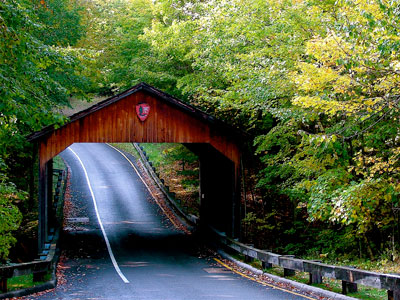
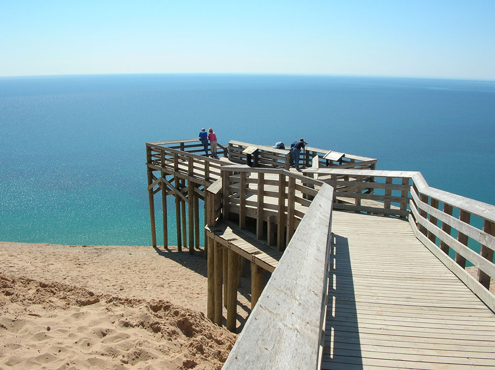
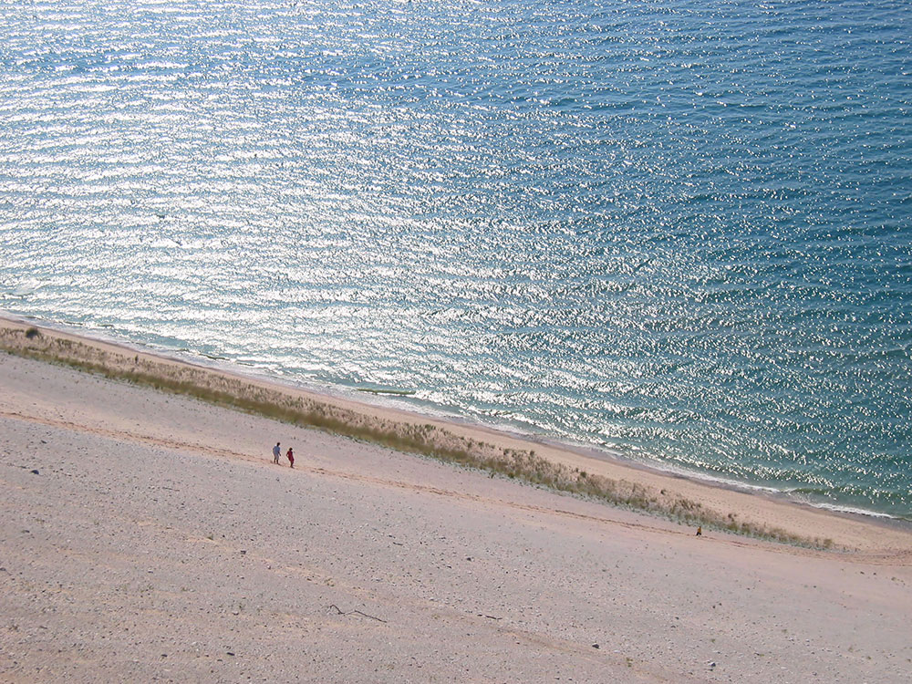
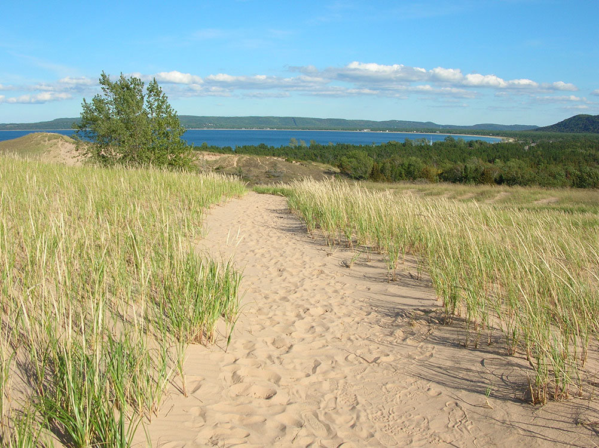

National lakeshore located along the northwest coast of the Lower Peninsula of Michigan near Empire, Michigan. The park covers a 35-mile-long (56 km) stretch of Lake Michigan's eastern coastline, as well as North and South Manitou islands. This Northern Michigan park was established primarily because of its outstanding natural features, including forests, beaches, dune formations, and ancient glacial phenomena
General Information
Visitor centers, campgrounds, and facilities have separate operating hours
Motorcycle Pass (7 Days): $20
Pedestrian/Bicyclist Pass (7 Days): $15 per person
Sleeping Bear Dunes Annual Pass: $45
America the Beautiful Pass accepted
How to Get There
From Empire, MI: Travel to the Philip A. Hart Visitor Center at 9922 Front Street in downtown Empire via M-22 and M-72.
Overview
Sleeping Bear Dunes National Lakeshore is a national lakeshore located along the northwest coast of the Lower Peninsula of Michigan near Empire, Michigan. The park covers a 35-mile-long (56 km) stretch of Lake Michigan's eastern coastline, as well as North and South Manitou islands. This Northern Michigan park was established primarily because of its outstanding natural features, including forests, beaches, dune formations, and ancient glacial phenomena. The lakeshore also contains many cultural features including the 1871 South Manitou Island Lighthouse, three former stations of the Coast Guard (formerly the Life-Saving Service) and an extensive rural historic farm district. In 2011, the area won the title of "The Most Beautiful Place in America" from Good Morning America.
In 2014, 32,500 acres (13,200 ha; 50.8 sq mi) of the park were formally designated as the Sleeping Bear Dunes Wilderness by the Sleeping Bear Dunes National Lakeshore Conservation and Recreation Act.
The park is named after an Ojibwe legend of the sleeping bear. According to the legend, an enormous forest fire on the western shore of Lake Michigan drove a mother bear and her two cubs into the lake for shelter, determined to reach the opposite shore. After many miles of swimming, the two cubs lagged behind. When the mother bear reached the shore, she waited on the top of a high bluff. The exhausted cubs drowned in the lake, but the mother bear stayed and waited in hopes that her cubs would finally appear. Impressed by the mother bear's determination and faith, the Great Spirit created two islands (North and South Manitou islands) to commemorate the cubs, and the winds buried the sleeping bear under the sands of the dunes where she waits to this day. The "bear" was a small tree-covered knoll at the top edge of the bluff that, from the water, had the appearance of a sleeping bear. Wind and erosion have caused the "bear" to be greatly reduced in size over the years.
Things to Do
Experience the Most Famous Dunes on the Great Lakes
Sleeping Bear Dunes National Lakeshore protects more than 70,000 acres of stunning landscapes along the northeastern shore of Lake Michigan. Known for its towering sand dunes, crystal-clear beaches, inland lakes, forests, historic sites, and scenic overlooks, the lakeshore is consistently ranked among the most beautiful places in the United States.
Climb the Dunes
One of the park's signature experiences is climbing the massive sand dunes that rise hundreds of feet above Lake Michigan. Visitors can explore the popular Dune Climb and enjoy spectacular views of the surrounding lakes, forests, and shoreline while experiencing one of Michigan's most iconic natural attractions.
Drive the Pierce Stocking Scenic Drive
This scenic seven-mile route winds through forests, dunes, and overlooks while providing access to some of the most breathtaking views in the park. Several stops along the drive feature dramatic vistas overlooking Lake Michigan and the towering dunes below.
Visit Historic Glen Haven
The restored village of Glen Haven preserves a glimpse of nineteenth-century life along Lake Michigan. Visitors can explore historic buildings, maritime exhibits, a blacksmith shop, and a cannery museum while learning about the area's shipping and logging history.
Enjoy Beaches, Paddling, and Wildlife Viewing
Sleeping Bear Dunes offers miles of sandy beaches, kayaking opportunities on Lake Michigan and inland rivers, fishing, swimming, and wildlife observation. Visitors may encounter white-tailed deer, foxes, bald eagles, black bears, and numerous migratory bird species throughout the park.
Top Trails
Empire Bluff Trail
Length: Approximately 1.5 miles round trip
Elevation Gain: Moderate
Difficulty: Easy to Moderate
One of the park's most popular trails, Empire Bluff Trail leads to a spectacular overlook perched high above Lake Michigan. The panoramic views of shoreline, dunes, and distant islands make it a favorite destination for photographers and nature lovers.
Dune Climb Trail
Length: Approximately 3.5 miles round trip to Lake Michigan
Elevation Gain: Significant through sand dunes
Difficulty: Strenuous
Starting at the famous Dune Climb, this route crosses expansive dune fields and eventually reaches Lake Michigan. It offers an unforgettable experience traversing one of the largest freshwater dune systems in the world.
Pyramid Point Trail
Length: Approximately 2.7 miles loop
Elevation Gain: Moderate
Difficulty: Moderate
This scenic trail passes through hardwood forests and leads to a dramatic bluff overlooking Lake Michigan and the Manitou Islands. The overlook is considered one of the finest viewpoints in the park.
Sleeping Bear Heritage Trail
Length: Approximately 22 miles
Elevation Gain: Moderate
Difficulty: Easy to Moderate
This paved multi-use trail connects several major attractions within the lakeshore and is popular for walking, running, and cycling. The route passes forests, beaches, wetlands, historic sites, and scenic overlooks while providing an excellent way to explore the park.
Sources: National Park Service official Sleeping Bear Dunes National Lakeshore information, including details on the Dune Climb, Pierce Stocking Scenic Drive, Glen Haven Historic Village, beaches, wildlife viewing, hiking trails, and recreational opportunities. https://www.nps.gov/slbe
Additional information verified through National Park Service visitor resources covering Empire Bluff Trail, Pyramid Point Trail, Sleeping Bear Heritage Trail, dune ecosystems, and Lake Michigan recreation opportunities. https://www.nps.gov/slbe/planyourvisit
Glen Haven existed as a company town from 1865 to 1931. Originally a dock for Glen Arbor (1855-date), the site soon became a fuel supply point for ships traveling up and down the lake. Here, Charles McCarty decided to open his own business and built a dock to supply the ships with wood. In 1863, McCarty built the Sleeping Bear House. It was expanded a few years later to accommodate travelers. In 1928, it was remodeled into the inn for summer vacationers. The General Store was established to supply the workers. Like most company towns, the workers were paid in company coupons, redeemable only at the company store. The Blacksmith Shop is where tools were repaired. In 1878, David Henry Day arrived in the community. By this time, coal from the Appalachian coal fields was replacing wood on the steamships. Day was looking for another future to this small community.
In 1860, Port Oneida had a population of 87 people. Thomas Kelderhouse had built a dock to sell wood to the passing steamships. He was also able to sell fresh produce and maple sugar in season. A local story says that the name comes from the first ship to stop, the SS Oneida of New York State. The area covers 3,000 acres (12 km2) and includes 16 historic farms. The farming community was gradually abandoned due to hard farming conditions and declining timber sales.
The main dune climb is located across from Glen Lake. The dune climb is also accessible by foot or by bike. Hikers can spend a few minutes or up to four hours, hiking all the way to Lake Michigan.
This article uses material from the Wikipedia article "Sleeping Bear Dunes National Lakeshore", which is released under the Creative Commons Attribution-Share-Alike License 3.0
Featured Locations and Trails

English: NPS, Public domain, via Wikimedia Commons; Image Size Adjusted
.jpg){kind=link}
Pierce Stocking Scenic Drive
Scenic route within Sleeping Bear Dunes National Lakeshore runs for 7.4 miles through forest and dunes areas, providing access to scenic overlooks of the Lake Michigan shoreline

.JPG){kind=link}



.jpg){kind=link}